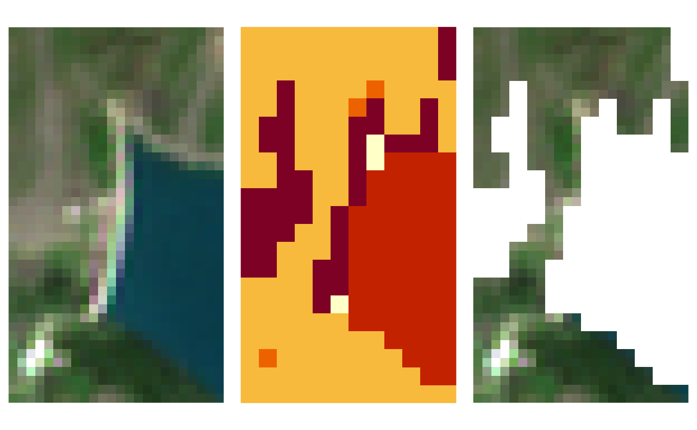

s2_mask Applies a cloud mask to a Sentinel-2 product. Since raster functions are used to perform computations, output files are physical rasters (no output VRT is allowed).
s2_perc_masked computes the percentage of cloud-masked surface. The function is similar to s2_mask, but it returns percentages instead of masked rasters.
s2_mask(
infiles,
maskfiles,
mask_type,
smooth = 0,
buffer = 0,
max_mask = 100,
outdir = "./masked",
tmpdir = NA,
rmtmp = TRUE,
save_binary_mask = FALSE,
format = NA,
subdirs = NA,
compress = "DEFLATE",
bigtiff = FALSE,
parallel = FALSE,
overwrite = FALSE,
.log_message = NA,
.log_output = NA
)
s2_perc_masked(
infiles,
maskfiles,
mask_type = "cloud_medium_proba",
tmpdir = NA,
rmtmp = TRUE,
parallel = FALSE
)A vector of input filenames. Input files are paths of products already converted from SAFE format to a format managed by GDAL (use s2_translate to do it); their names must be in the sen2r naming convention (safe_shortname).
A vector of filenames from which to take the
information about cloud coverage (for now, only SCL products
have been implemented). It is not necessary that maskfiles
elements strictly match infiles ones. Input files are paths
of products already converted from SAFE format to a
format managed by GDAL (use s2_translate to do it);
their names must be in the sen2r naming convention
(safe_shortname).
Character vector which determines the type of mask to be applied. Accepted values are:
"nomask": do not mask any pixel;
"nodata": mask pixels checked as "No data" or "Saturated or defective"
in the SCL product (all pixels with values are maintained);
"cloud_high_proba": mask pixels checked as "No data", "Saturated or
defective" or "Cloud (high probability)" in the SCL product;
`"cloud_medium_proba": mask pixels checked as "No data", "Saturated or defective" or "Cloud (high or medium probability)" in the SCL product;
"cloud_and_shadow": mask pixels checked as "No data", "Saturated or
defective", "Cloud (high or medium probability)" or "Cloud shadow"
in the SCL product;
"clear_sky": mask pixels checked as "No data", "Saturated or
defective", "Cloud (high or medium probability)", "Cloud shadow",
"Unclassified" or "Thin cirrus" in the SCL product
(only pixels classified as clear-sky surface - so "Dark area",
"Vegetation", "Bare soil", "Water" or "Snow" - are maintained);
"land": mask pixels checked as "No data", "Saturated or
defective", "Cloud (high or medium probability)", "Cloud shadow", "Dark area",
"Unclassified", "Thin cirrus", "Water" or "Snow" in the SCL product
(only pixels classified as land surface - so "Vegetation" or
"Bare soil" - are maintained);
a string in the following form: "scl_n_m_n", where n, m and n
are one or more SCL class numbers. E.g. string "scl_0_8_9_11" can
be used to mask classes 0 ("No data"), 8-9 ("Cloud (high or medium
probability)") and 11 ("Snow").
(optional) Numerical (positive): the size (in the unit of
inmask, typically metres) to be used as radius for the smoothing
(the higher it is, the more smooth the output mask will result).
Default is 0 (no smoothing is applied).
(optional) Numerical (positive or negative): the size of the
buffer (in the unit of inmask, typically metres) to be applied to the
masked area after smoothing it (positive to enlarge, negative to reduce).
Default is 0 (no buffer).
(optional) Numeric value (range 0 to 100), which represents
the maximum percentage of allowed masked surface (by clouds or any other
type of mask chosen with argument mask_type) for producing outputs.
Images with a percentage of masked surface greater than max_mask%
are not processed (the list of expected output files which have not been
generated is returned as an attribute, named skipped).
Default value is 100 (images are always produced).
Notice that the percentage is computed on non-NA values (if input images
had previously been clipped and masked using a polygon, the percentage is
computed on the surface included in the masking polygons).
(optional) Full name of the output directory where
the files should be created (default: "masked"
subdir of current directory).
outdir can bot be an existing or non-existing directory (in the
second case, its parent directory must exists).
If it is a relative path, it is expanded from the common parent
directory of infiles.
(optional) Path where intermediate files (VRT) will be created.
Default is a temporary directory.
If tmpdir is a non-empty folder, a random subdirectory will be used.
(optional) Logical: should temporary files be removed? (Default: TRUE). This parameter takes effect only if the output files are not VRT (in this case temporary files cannot be deleted, because rasters of source bands are included within them).
(optional) Logical: should binary masks be exported?
Binary mask are intermediate rasters used to apply the cloud mask:
pixel values can be 1 (no cloud mask), 0 (cloud mask) or NA (original NA
value, i.e. because input rasters had been clipped on the extent polygons).
If FALSE (default) they are not exported; if TRUE, they are exported
as MSK prod type (so saved within outdir, in a subdirectory called "MSK"
if subdirs = TRUE).
Notice that the presence of "MSK" products is not checked before running
sen2r(), as done for the other products; this means that missing products
which are not required to apply cloud masks will not be produced.
(optional) Format of the output file (in a
format recognised by GDAL). Default is the same format of input images
(or "GTiff" in case of VRT input images).
(optional) Logical: if TRUE, different indices are
placed in separated outfile subdirectories; if FALSE, they are placed in
outfile directory; if NA (default), subdirectories are created only if
more than a single product is required.
(optional) In the case a GTiff format is
present, the compression indicated with this parameter is used.
(optional) Logical: if TRUE, the creation of a BigTIFF is forced (default is FALSE). This option is used only in the case a GTiff format was chosen.
(optional) Logical: if TRUE, masking is conducted using parallel
processing, to speed-up the computation for large rasters.
The number of cores is automatically determined; specifying it is also
possible (e.g. parallel = 4).
If FALSE (default), single core processing is used.
Multiprocess masking computation is always performed in singlecore mode
if format != "VRT" (because in this case there is no gain in using
multicore processing).
(optional) Logical value: should existing output files be overwritten? (default: FALSE)
(optional) Internal parameter
(it is used when the function is called by sen2r()).
(optional) Internal parameter
(it is used when the function is called by sen2r()).
s2_mask returns a vector with the names of the created products.
An attribute "toomasked" contains the paths of the outputs which were not
created cause to the high percentage of cloud coverage.
s2_perc_masked returns a names vector with the percentages of masked surfaces.
License: GPL 3.0
L. Ranghetti, M. Boschetti, F. Nutini, L. Busetto (2020). "sen2r": An R toolbox for automatically downloading and preprocessing Sentinel-2 satellite data. Computers & Geosciences, 139, 104473. doi:10.1016/j.cageo.2020.104473 , URL: https://sen2r.ranghetti.info/.
# \donttest{
# Define file names
ex_in <- system.file(
"extdata/out/S2A2A_20190723_022_Barbellino_RGB432B_10.tif",
package = "sen2r"
)
ex_mask <- system.file(
"extdata/out/S2A2A_20190723_022_Barbellino_SCL_10.tif",
package = "sen2r"
)
# Run function
ex_out <- s2_mask(
infiles = ex_in,
maskfiles = ex_mask,
mask_type = "land",
outdir = tempdir()
)
#> [2022-09-22 07:44:43] Masking file
#> S2A2A_20190723_022_Barbellino_RGB432B_10.tif...
ex_out
#> [1] "/tmp/Rtmpii8cRk/S2A2A_20190723_022_Barbellino_RGB432B_10.tif"
#> attr(,"toomasked")
#> character(0)
# Show output
oldpar <- par(mfrow = c(1,3))
par(mar = rep(0,4))
image(stars::read_stars(ex_in), rgb = 1:3, useRaster = TRUE)
par(mar = rep(2/3,4))
image(stars::read_stars(ex_mask), useRaster = TRUE)
par(mar = rep(0,4))
image(stars::read_stars(ex_out), rgb = 1:3, useRaster = TRUE)

par(oldpar)
# }